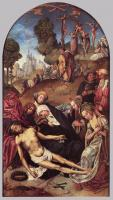
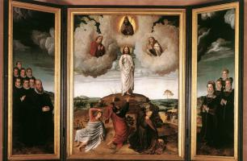
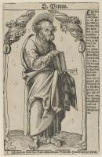
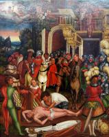

Christian Art: Русский
Старый Завет

Адам и Ева (51)

Давид (9)

Моисей (3)

Ной (3)

Пророки (30)

Соломон (4)

Сотворение мира (7)

Сюжети Старого Завета (34)

Юдит (9)
Богородица

Бегство в Египет (25)

Благовещение (45)

Богородица и Дитя (250)

Коронация Богородицы (13)

Портрет Богородицы (16)

Родители Богородицы (10)

Сцены из жизни Богородицы (26)

Успение (16)
Иисус Христос

Введение в храм (10)

Вознесение (4)

Воскресение (38)

Вход Господний в Иерусалим (3)

Крещение Господне (6)

Муж скорбей (12)

Оплакивание Христа (57)
Оплакивание Христа (57)

Поклонение Дитю (43)

Портрет Иисуса (26)

Преображение (4)
Преображение (4)

Притчи Иисуса (7)

Распятие (70)

Рождество (25)

Служение Иисуса (48)

Страсти Христовы (110)

Тайная вечеря (10)
Христианство

Ад (9)

Ангелы (26)

Апокалипсис (25)

Бог Отец (4)

Добродетели (26)

Пороки (16)

Пятидесятница (5)

Рай (6)

Страшный суд (14)

Сюжеты Нового Завета (32)

Троица (10)

Церковь (43)
Святые

Апостол Павел (10)

Апостол Петр (11)
Апостол Петр (11)

Иоанн Креститель (19)

Мария Магдалина (13)

Мученичество святых (40)
Мученичество святых (40)

Святой Антоний (9)

Святой Георгий (12)

Святой Иероним (20)

Святой Николай (6)

Святой Франциск (47)

Святой Христофор (11)

Святые (170)
Художники
А
Ангел Акотантос (16)
Альбрехт Альтдорфер (24)
Фра Беато Анджелико (145)
Ульрих Апт (2)
Питер Артсен (8)
Б
Ханс Бальдунг (26)
Дирк Баутс cтарший (34)
Жан Бельгамб (4)
Амброзиус Бенсон (16)
Виллем Бенсон (3)
Ян де Бир (6)
Иероним Босх (44)
Ханс Бургкмайр (46)
Дерик Бэгерт (7)
Д
Герард Давид (43)
Жак Даре (4)
Джотто (162)
Дуччо (80)
Альбрехт Дюрер (209)
К
Робер Кампен (19)
Йос ван Клеве (38)
Михиль Кокси (13)
Колин де Котер (10)
Лукас Кранах Младший (14)
Лукас Кранах Старший (239)
Петрус Кристус (17)
Питер Кук ван Альст (17)
М
Микеланджело (36)
П
Георг Пенц (8)
Р
Рафаэль (117)
Андрей Рицос (9)
Ш
Э
Бартелеми д’Эйк (2)
Хуберт ван Эйк (1)
Ян ван Эйк (39)